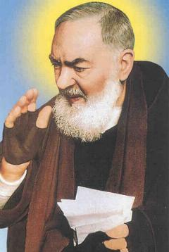
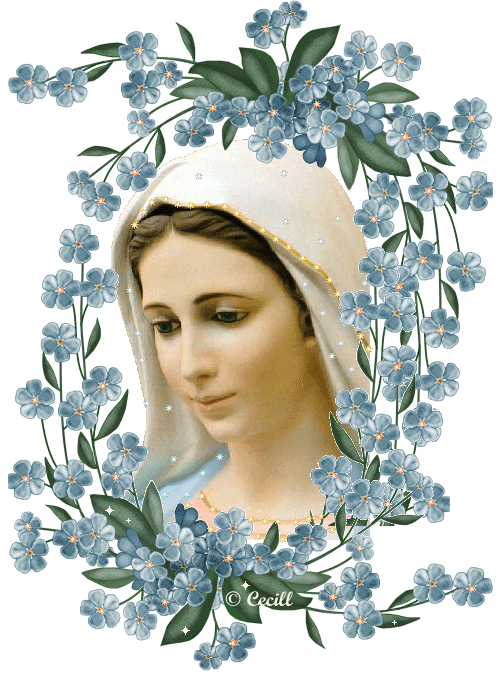
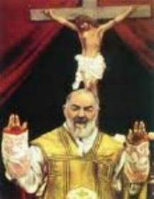
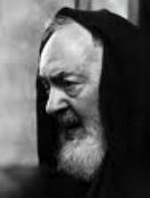
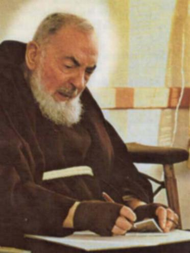
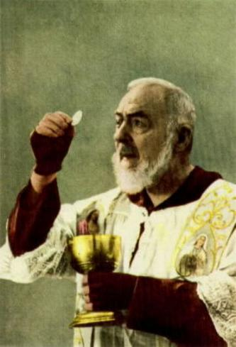
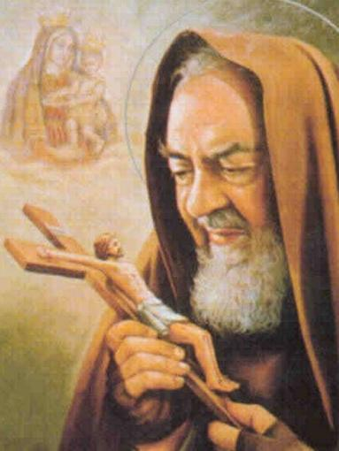
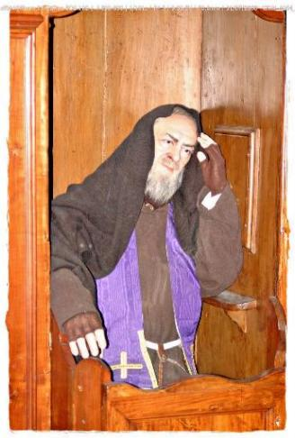
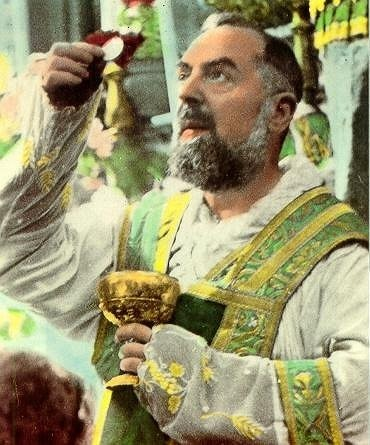

“ACONTECIMENTOS SOBRENATURAIS”
DEUS
em seus desígnios imperscrutáveis encheu a vida humilde do Padre Pio de admiráveis
dons: Bilocação (presença simultânea em dois lugares diferentes), 
UMA ALMA DO PURGATÓRIO
Numa tarde Padre Pio estava num quarto, localizado na parte baixa do Convento, destinado aos hóspedes. Ele estava só e descansava no sofá, quando de repente, apareceu um homem envolto numa capa preta. O Padre surpreso, ergueu-se e perguntou quem ele era e o que queria. O estranho respondeu que era uma alma do Purgatório. "Eu sou Pietro di Mauro, morri num incêndio neste Convento, em 18 de Setembro de 1908. Na realidade este Convento, depois da desapropriação dos bens eclesiástico, foi transformado em casa de repouso para anciões. Eu morri entre as chamas quando estava dormindo num colchão de palha, exatamente neste quarto. O bom DEUS, me permitiu vir até aqui e lhe pedir que celebrasse em meu benefício, uma Santa Missa amanhã pela manhã, para o meu descanso eterno. Graças a esta Santa Missa eu poderei entrar no Paraíso". Padre Pio disse ao homem que celebraria a Santa Missa para a alma dele. Posteriormente descrevendo o fato ao seu Confessor, acrescentou: "Eu, queria levá-lo até a porta do Convento para me despedir, quando repentinamente ele desapareceu. Seguramente percebi que havia falado com uma pessoa morta, e por isso mesmo, tenho que admitir que fiquei meio amedrontado. O Padre Superior do Convento, Monsenhor Paolino de Casacalenda, notou meu nervosismo, e então contei-lhe o que havia acontecido, e lhe pedi a permissão para celebrar a Santa Missa na manhã seguinte em sufrágio daquela alma necessitada. A Santa Missa foi celebrada ás 7 horas da manhã”.
Alguns dias depois, Padre Paolino, despertado pela curiosidade foi até o Cartório de registro de óbitos da comunidade de San Giovanni Rotondo, e pediu permissão para consultar o livro de registro de óbitos do ano de 1908. Após a consulta constatou que a história do Santo Padre Pío era verdadeira, pois no registro achou o nome e a razão da morte. Está escrito assim: No dia 18 de Setembro de 1908, no incêndio da casa de repouso morreu o Sr. Pietro di Mauro.


DESCANSO ETERNO
Depois de um mês da morte da mãe da senhora Cleonice Morcaldi, que era uma das suas filhas espirituais, Padre Pio após o término da confissão dela, lhe disse:"Nesta manhã sua mãe foi para o Céu, eu vi enquanto celebrava a Santa Missa. Por essa razão, a senhora deverá marcar na sacristia, uma data para a celebração de uma Santa Missa em ação de graças a DEUS pelo descanso eterno da alma de sua mãe”.


OUTRA ALMA DO PURGATÓRIO
O Padre Pio descreveu ao Padre Anastácio. "Uma tarde, enquanto eu estava rezando sozinho, ouvi o arrastar de um tecido no chão e vi um monge jovem próximo ao altar. Parecia que ele estava espanando os candelabros e regando os vasos de flores. Na verdade, pensei que ele fosse o Padre Leone que estava preparando o Altar e, como estava na hora do jantar, me aproximei e disse: Padre Leone, vá jantar, não está na hora de espanar e ajeitar o Altar. Mas uma voz que não era a do padre Leone me respondeu”:
- “Eu não sou o Padre Leone”.
- “Então perguntei: Quem é você? E a voz respondeu”:
- "Eu sou um irmão que fiz o Noviciado aqui. Minha missão era limpar o Altar durante todo o ano do Noviciado. Mas, desgraçadamente durante todo aquele tempo eu não reverenciava a JESUS Sacramentado, não lhe cumprimentava, todas as vezes que passava defronte o Altar, causando grande decepção e tristeza ao SENHOR, por causa da minha irreverência. Por este sério descuido, que pode ser considerado como uma abominável falta de atenção de minha parte, ainda estou no Purgatório. Agora, DEUS, misericórdia e bondade infinita, me enviou aqui para você me ajudar, auxiliando-me com suas orações a alcançar o Paraíso Eterno. DEUS me mandou para você cuidar de mim".
Penalizado com o sofrimento daquela alma, Padre Pio falou: "Amanhã pela manhã você estará no Paraíso, quando eu celebrar a Santa Missa em seu benefício". Aquela alma chorou e disse: "Cruel de mim, que malvado eu fui”! Em seguida, chorando a alma desapareceu. No dia seguinte, Padre Pio celebrou a Santa Missa em benefício dela.


AS LÁGRIMAS DO SENHOR
No dia
7 de Abril de 1913, Padre Pio enviou uma carta para o seu Confessor Padre Agostino:
"Meu querido Padre,
sexta-feira pela manhã eu ainda estava na cama, quando JESUS apareceu diante de mim.
ELE estava golpeado e desfigurado com muitas chagas que sangravam e me mostrou uma grande
multidão de sacerdotes, entre os quais, dignitários eclesiásticos vestindo as suas
sagradas túnicas que usavam para celebrar as Santas Missas, mas conduzindo as
cerimônias de modo indiferente e
frio, preocupados com os compromissos particulares. Quando vi JESUS naquelas
condições, senti uma grande angústia no coração e, LHE perguntei o motivo do
sofrimento DELE? ELE não me respondeu. Porém me mostrou os sacerdotes que
deveriam ser castigados. O SENHOR permanecia muito triste e inconformado com
aqueles sacerdotes e continuava olhando para eles. Então notei com grande pesar
as muitas lágrimas que banhavam a Santa Face do SENHOR. ELE se afastou daquela
multidão de sacerdotes e com uma imensa expressão de desgosto no olhar, chorou e
disse:”"Açougueiros!"
“Em silêncio assisti toda
aquela cena. O SENHOR me disse:”"Minha Criança, não creia que minha agonia foi somente aquelas três horas
pregado na Cruz no Calvário, não. De fato permanecerei em agonia até o fim do mundo por
causa da tristeza que me causam, as almas que EU amo. Durante o tempo de agonia, Minha
criança, ninguém pode dormir. Minha alma está procurando alguma gota de piedade humana
naqueles que escolhi, mas eles só me proporcionam indiferenças e decepções. A ingratidão
é a mais severa agonia para MIM. Eles correspondem muito mal ao Meu Amor! Para
MIM o tormento maior é quando se manifesta nas pessoas o desprezo, a indiferença
e a incredulidade. Quantas vezes minha tristeza projetou golpeá-los com raios,
mas fui consolado por Minha MÃE, pelos Anjos e as almas que me amam. Escreva ao
seu Padre Confessor e conte tudo o que você viu e ouviu esta manhã. Fale com ele
para mostrar esta carta ao Padre Diretor da Província".“JESUS continuou falando mas, o que
ELE disse, eu nunca poderei revelar".
PROTEÇÃO DIVINA Carta ao Padre
Agostino datada em 13 de Fevereiro de 1913 – “NOSSO PAI JESUS CRISTO me revelou:”“Não se preocupe, em tê-lo feito sofrer, porque também te darei a força. Quero que tua
alma se purifique com o martírio e o culto diário. Não te assustes se permito ao
diabo atormentá-lo, e ao mundo repugná-lo, porque ninguém conseguirá vencer as
pessoas que sofrem debaixo da cruz por Meu Amor, pois estão protegidas para
sempre”.
BOLSA COM CASTANHAS
O
primeiro milagre atribuído ao Padre Pio aconteceu em 1908. Naquela época ele
morava no Convento de Montefusco. Um dia ele decidiu ir a floresta para colher
castanhas em uma bolsa. Depois enviou esta bolsa com castanhas a sua tia Daria em
Pietrelcina. Ela sempre foi muito afetuosa com ele. Sua tia recebeu a bolsa e comeu
as castanhas, guardando a bolsa como lembrança. Poucos dias depois ela procurava
algo numa gaveta onde o seu marido normalmente guardava pólvora. Era noite e ela
usando uma vela para facilitar a busca, de repente a gaveta pegou fogo. O fogo
atingiu tia Daria e no mesmo instante, ela pegou a bolsa que trouxe as castanhas
do Padre Pio e a colocou na face, onde o fogo tinha alcançado. Imediatamente sua
dor desapareceu e não ficou nenhuma ferida ou queimadura no seu rosto.
NOSSA SENHORA
MANDOU O SOBRINHO ESCREVER  A
senhora Cleonice Morcaldi, filha espiritual do Padre Pio narrou: "Durante a Segunda Guerra Mundial
meu sobrinho estava prisioneiro. Não tínhamos recebido notícias dele durante um ano
e todos começaram a acreditar que ele tinha morrido. Os Pais pensavam a
mesma coisa. Um dia a mãe foi encontrar o Padre Pio e se ajoelhou em frente
dele no confessionário e disse”:"Por favor, diga-me se meu filho está vivo. Eu não vou embora se não me
falar”.“Padre Pio acolheu aquela
súplica e disse”:"Levante-se
e fique tranquila".“Alguns
dias depois, não suportando a dor daqueles pais, fui ao encontro do Padre e pedi um milagre
para aquela família. Eu lhe disse: Padre, eu vou escrever uma carta ao meu sobrinho
Giovannino. Eu só escreverei o nome dele no envelope por que não sei onde ele
está. O Senhor e o seu Anjo da Guarda é que levarão a carta até ele. Padre Pio
não respondeu. Escrevi a carta a noite e a coloquei em minha mesa, para
entregá-la na manhã seguinte ao Padre. Ao amanhecer, para minha grande surpresa
e apreensão, a carta não estava mais ali sobre a mesa. Fui correndo até o Padre
Pio e sem saber se era para lhe agradecer, ele me disse”:"Agradeça a NOSSA SENHORA".“Quase quinze dias depois nosso
sobrinho respondeu a carta. Então toda a nossa família ficou contente, dando
graças a DEUS, a NOSSA SENHORA que fez a carta chegar as mãos dele e ao Padre Pio”.
O OFICIAL DA
MARINHA ESCAPOU COM VIDA Durante
a Segunda Guerra Mundial o filho da senhora Luisa que era Oficial da Marinha
Real Britânica tornou-se motivo de angústia para sua mãe, pois preocupada com a
conduta dele, orava diariamente suplicando a DEUS pela conversão e salvação de
seu filho. Um dia um viajante inglês chegou a San Giovanni Rotondo, trazendo
alguns jornais ingleses. Luisa quis ler os jornais. Leu as notícias sobre o
afundamento do navio onde estava o filho. Foi chorando encontrar o Padre Pio que
a consolou imediatamente: “Quem
lhe falou que seu filho morreu”?
E com grande segurança, o Padre lhe disse exatamente o nome e o endereço do
hotel onde o jovem oficial estava, depois de ter escapado do naufrágio do navio
no Atlântico, estava hospedado num hotel a espera de uma ordem superior, que lhe
indicasse um trabalho em outro navio.
Imediatamente Luisa lhe enviou uma carta e depois de 15 dias obteve uma resposta
do filho.
O COMERCIANTE PECADOR O padre Guardião
do Convento de São Giovanni Rotondo contou: "Certo dia, um comerciante de Pisa veio pedir ao Padre Pio para curar a sua filha.
O Padre olhou para ele e disse”:
"Tu estás mais doente do que a tua filha. Eu te vejo morto".“Assustado, o homem argumentou”:"Não é possível, eu estou muito bem"!“Gritou o Padre”:"Infeliz.
Desgraçado. Como pode dizer que estás bem com tantos pecados na sua consciência? Vejo pelo menos trinta
e dois pecados"!“Imagine o susto
do comerciante. Depois da confissão ele contou a todos os que quisessem escutar”:
:"Ele já sabia de tudo, de todos
os meus pecados, e me repetiu tudo, para que minha Confissão fosse perfeita"!
A PROVIDÊNCIA
SALVOU A VIDA DO CAPITÃO Um dia,
um oficial do Exército Italiano chegou na sacristia e vendo o Padre Pio disse:
"Sim, aqui está ele! Eu
não estou enganado, é ele mesmo!" Aproximou-se do Padre Pio e se ajoelhou diante dele e chorando disse:
"Obrigado Padre, o senhor salvou
a minha vida”. O oficial contou
o fato: "Eu era Capitão da
Infantaria e um dia, no campo de batalha, diante de um terrível fogo inimigo estava rezando
e suplicando ao SENHOR que iluminasse o meu procedimento, quando vi a uma certa distância um
frade que me disse”:
"Senhor, afaste-se deste local". “Sem pensar, movido apenas por um sentimento de defesa, caminhei rápido na direção dele e,
poucos segundos depois, no lugar onde estava, caiu uma granada e estourou forte abrindo uma
enorme cratera. Eu me virei para encontrar o frade, mas ele não estava mais lá”. Por Vontade Divina, o Padre Pio salvou a
vida daquele homem.
O
CÂNCER NO BRAÇO DESAPARECEU

CONFISSÃO È COISA
SÉRIA Uma
senhora de Londres, Inglaterra, entrou na fila para se confessar com o Padre
Pio. Mas assim que chegou a vez dela, ele fechou a janelinha do Confessionário e
não a atendeu, dizendo: "Não estou disponível para você." Por que o Padre Pio não a quis confessar?
A mulher insistiu, todos os dias durante duas semanas se prostrava no Confessionário, mas
não era atendida pelo Padre. Até que finalmente ele a recebeu. Durante a Confissão ela
perguntou ao Padre Pio: “Por
qual razão o senhor me fez esperar por tanto tempo”? O Padre respondeu: "E você, quanto tempo deixou o nosso DEUS
esperando pacientemente pelo arrependimento de seus pecados e sua decisão de
purificá-los pela Confissão Sacramental? Você precisava saber como JESUS estava
satisfeito, com tantos sacrilégios que você cometeu… Quanto fingimento ao lado
de seu marido e de sua mãe durante a oração, chegando ao absurdo de receber a
Sagrada Comunhão em pecado mortal". A mulher, ficou atordoada, e recebeu a
absolvição chorando. Diante do Altar, decidiu definitivamente mudar o rumo de
sua vida. Alguns dias depois retornou a Inglaterra, tranquila, calma e em paz
com sua consciência, na certeza de que a bondade infinita e misericordiosa do
SENHOR, tinha perdoado todos os seus pecados.
UMA FÉ QUE REMOVE
MONTANHA Um homem
de Ascoli Piceno, pequena cidade no interior da Itália, contou: “Lá pelo final dos anos de 1950,
fui a São Giovanni Rotondo com minha esposa para confessarmos e recebermos a absolvição
sacramental, naturalmente depois de cumprirmos a penitência imposta pelo Padre
Pio. Já anoitecia, e eu ainda estava no Convento, quando encontrei o Padre e ele
me disse:” “Você ainda
está aqui”? “Então lhe
expliquei: Meu carango não deu partida, e ele me perguntou”: “O que exatamente é um carango” “Respondi: É o meu carro. Então ele disse:” “Vamos dar uma olhadinha”.
“Quando chegamos ao automóvel,
ele virou a chave e deu a partida imediatamente sem qualquer problema, o motor do carro
ligou. Admirados, eu e minha mulher viajamos toda a noite e, na manhã seguinte,
levei o carro para o mecânico dar uma olhada. Depois de fazer os testes, ele me
disse que o sistema elétrico estava completamente danificado, e não acreditou
quando eu lhe falei que tinha viajado com o veículo a noite inteira. Segundo
ele, é impossível cobrir 400 quilômetros de estrada, entre San Giovanni Rotondo
e Ascoli Piceno, com o carro naquele estado. Logo percebi: o Padre Pio
carinhosamente tinha me ajudado e, eu lhe agradeci sinceramente com toda a
amizade de meu coração”.
ELE SABE ONDE ESTÁ
DEUS Às
vezes, quando mostravam a Frei Pio alguns objetos como Terços, Rosários ou
imagens sagradas com o pedido para que ele as abençoasse, ele às vezes, devolvia alguns
objetos ao solicitante com a declaração precisa: "Isto já foi abençoado". E era verdade.
O PERFUME MARCAVA A INESQUECÍVEL
PRESENÇA  Uma
senhora contou: No ano 1945 sua mãe a levou a San Giovanni Rotondo para conhecer
pessoalmente o Padre Pio e se confessar. Enquanto esperava a sua vez, pois
tinha muita gente, pensava em seus pecados preparando-se para uma boa confissão. Porém quando
chegou a sua vez e estava na presença dele, ficou paralisada. O Padre Pio
percebendo a sua timidez, com um sorriso lhe disse: "Você quer que eu fale por ti?" Ela consentiu por meio de um sinal
e, depois, terminada a Confissão, estava pasma e impressionada. Não podia acreditar!
O Padre Pio tinha falado palavra por palavra, tudo o que ela deveria lhe ter confessado.
Ela se sentiu tranquila e calma, e mentalmente agradeceu a DEUS a presença do venerado
Sacerdote por obsequiá-la com a experiência de seu extraordinário carisma. Ela lhe
confiou à saúde da sua alma e do seu corpo. Ele respondeu: “Sempre serei teu pai espiritual". Ela se despediu com uma
imensa alegria no coração. Enquanto regressava de trem, sentiu um intenso
perfume de flores do qual jamais se esqueceu em toda a sua vida. Era a presença
do Padre Pio que a encheu de felicidade.
PERIGOSA VIAGEM DE AVIÃO
O Padre Eusébio
narra: “Estava viajando a Londres
de avião, contra o conselho do Padre Pio que tinha recomendado que eu não usasse aquele
meio de transporte. Quando sobrevoávamos o canal da Mancha surgiu uma violenta
tempestade e o avião seguindo a rota, trouxe perigo para todas as pessoas e
inclusive para a aeronave. Diante do terror de todos, muito nervoso recitei o
ato de contrição, e sem saber o que fazer enviei um pedido ao Padre Pio através
de meu Anjo da Guarda, suplicando urgentemente a sua ajuda. O tempo acalmou e
completamos a viagem sem outras dificuldades. De regresso a San Giovanni Rotondo
fui ver o Padre. Ele me disse”: "Menino como está? Passastes bem o tempo todo”? “Eu respondi: Padre estive
a ponto de morrer! Ele então rapidamente falou”: “Porque você não me obedeceu?" “Falei: Desculpe-me Padre, porém rezei ao meu Anjo da Guarda suplicando
a sua ajuda... Ele completou”:
“Ainda bem que o seu Anjo da Guarda chegou a tempo”!
DESVIOU OS AVIÕES E AS BOMBAS
Na cidade
de Bari, na Itália, durante a II Guerra Mundial se encontrava a sede do Comando da
Força Aérea Americana. Durante a guerra, muitos oficiais se dirigiam a San Giovanni
Rotondo, para conhecer e ver o Padre Pio. Inclusive o general comandante foi
protagonista de um episódio assombroso. Esse oficial americano quis levar um
esquadrão de bombardeiros para destruir um depósito de material de guerra
alemão, que se localizava próximo a San Giovanni Rotondo. O general disse: “Quando os aviões estavam próximos
ao alvo, eles viram no céu um monge com as mãos erguidas, desviando os aviões.
As bombas lançadas foram cair nos bosques, distante do lugarejo. Sem qualquer
explicação, os aviões tinham mudado o percurso”. Todos se perguntavam quem era aquele monge que os aviões
tinham obedecido. Alguém falou para o General que em San Giovanni Rotondo tinha
um monge que fazia milagres. Ele então decidiu, assim que terminasse a guerra,
ia verificar quem era o monge que eles tinham visto no Céu. Depois da guerra o
General foi ao Convento dos Capuchinhos com alguns pilotos. Entrando na
Sacristia encontrou vários monges e entre eles reconheceu imediatamente o monge
que tinha parado os seus aviões: era o Padre Pio. O Padre caminhou ao seu
encontro e ao chegar perto disse: "Então foi você que quis matar todos nós”? Iluminado pelo olhar e pelas palavras do Padre, o General se
ajoelhou diante dele. Como de costume o Padre Pio falou no seu dialeto local, mas o General
que mau falava o italiano, se convenceu que o monge tinha falado em inglês, porque entendeu
perfeitamente as suas palavras. Este era mais um dos muitos dons que o Padre Pio possuía.
Todos ficaram admirados, e o General e seus companheiros aviadores que eram protestantes,
se converteram ao catolicismo.     